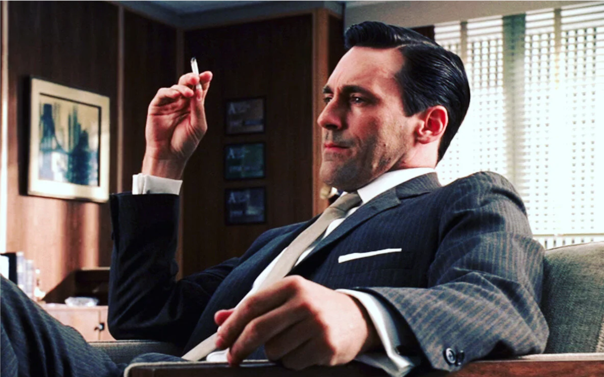
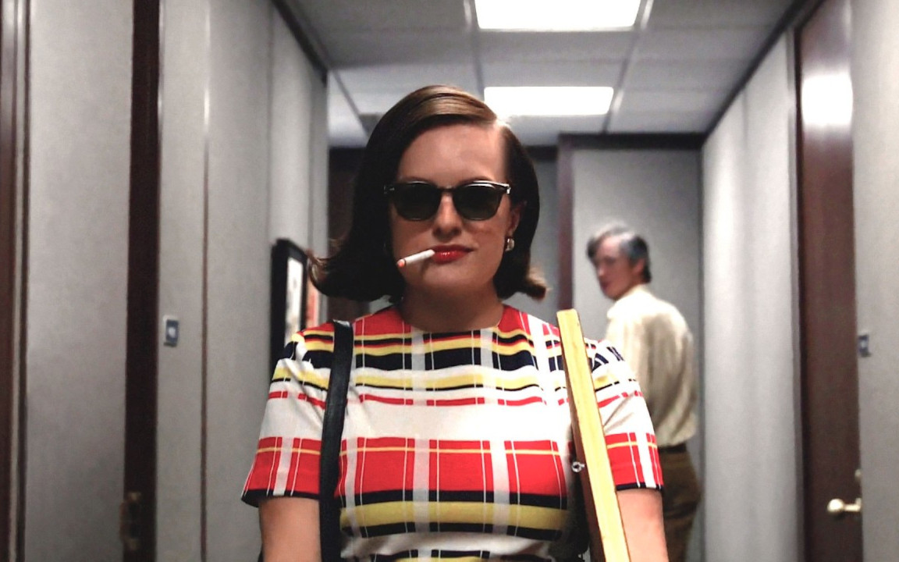
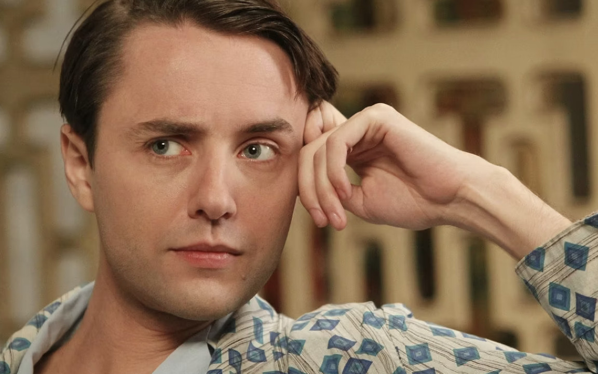
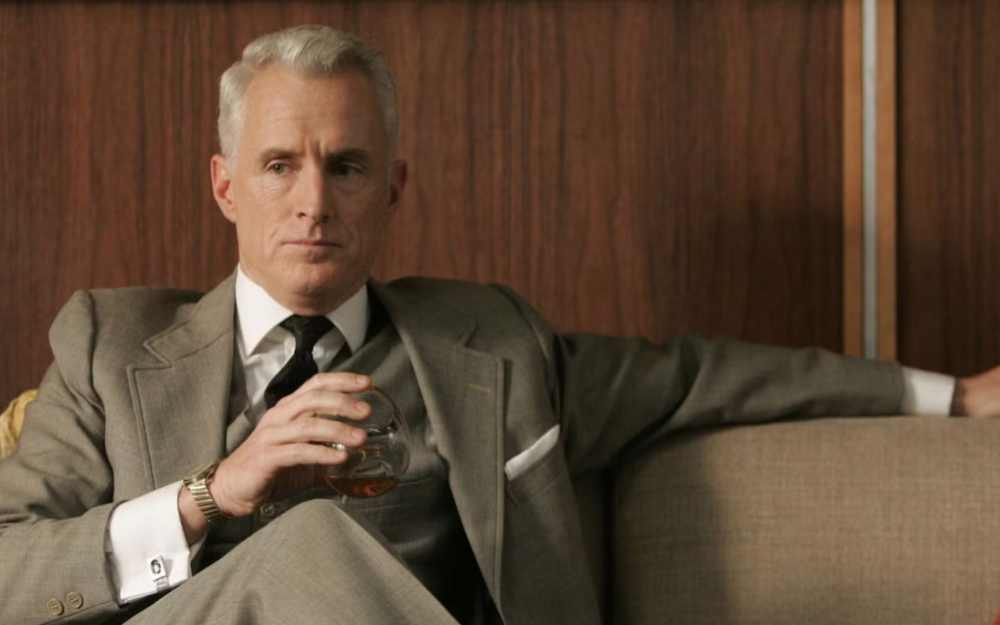
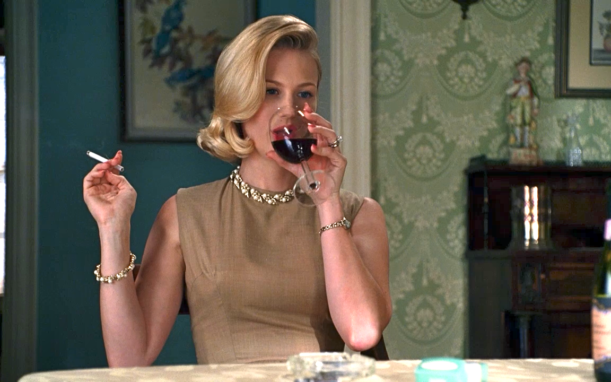
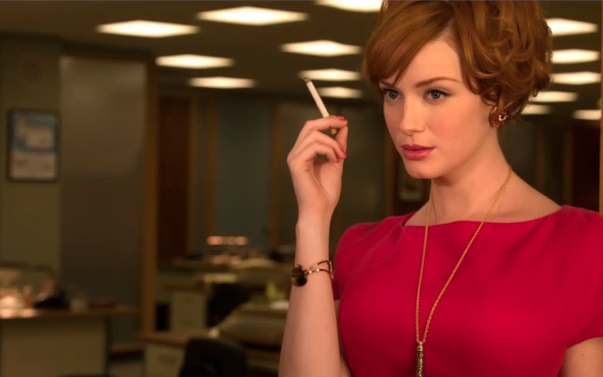

Personajes principales
Donald Draper

Es el publicista estrella, el tipo que siempre parece tener la respuesta justa en la reunión. Tiene ese aire misterioso y elegante que hace que todos lo miren con admiración, aunque nunca sabés del todo qué se le pasa por la cabeza. Un personaje que atrae y desconcierta a la vez.
Peggy Olson

Arranca en un puesto que nadie toma demasiado en serio, pero enseguida se nota que es mucho más inteligente y creativa de lo que esperan. Peggy es de esos personajes que sorprenden porque no se conforma y siempre busca ir un paso más allá, incluso cuando le ponen palos en la rueda.
Pete Campbell

Un ambicioso total, con una mezcla rara entre encanto y pesadez. Pete es de esos tipos que hacen lo imposible por subir de rango, aunque a veces su propio ego lo termine complicando. Igual, no se puede negar que es vivo y que sabe moverse.
Roger Sterling

El socio veterano que vive entre un chiste y un trago. Siempre tiene un comentario sarcástico a mano y, aunque muchas veces no se lo tome tan en serio como debería, su carisma lo mantiene en el centro de la escena.
Betty Draper

La postal perfecta de ama de casa de los 60: elegante, prolija y siempre con una sonrisa impecable… al menos en apariencia. Es uno de esos personajes que parecen sacados de una revista, pero con algo mucho más complejo detrás.
Joan Holloway

La que maneja la oficina. Joan sabe exactamente cómo funciona todo y cómo llevar a la gente. Es encantadora, práctica y tiene una seguridad que la hace imposible de ignorar, incluso en un ambiente donde muchas veces no le dan el reconocimiento que merece.